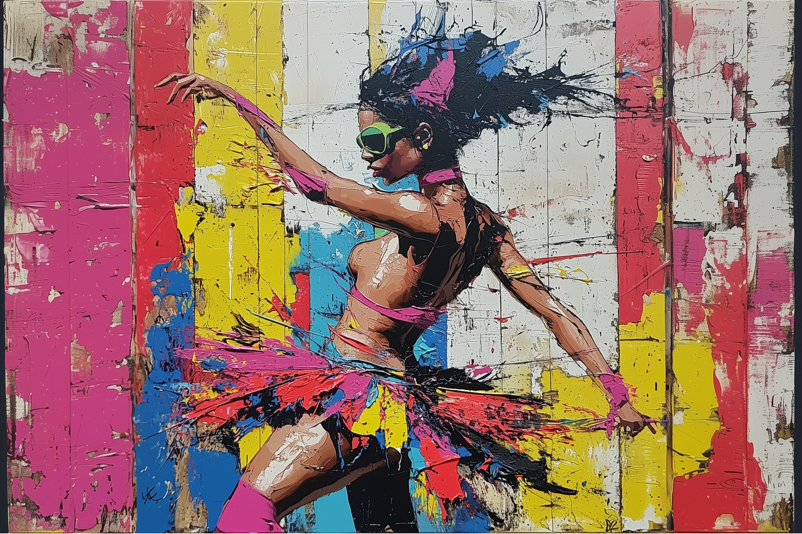
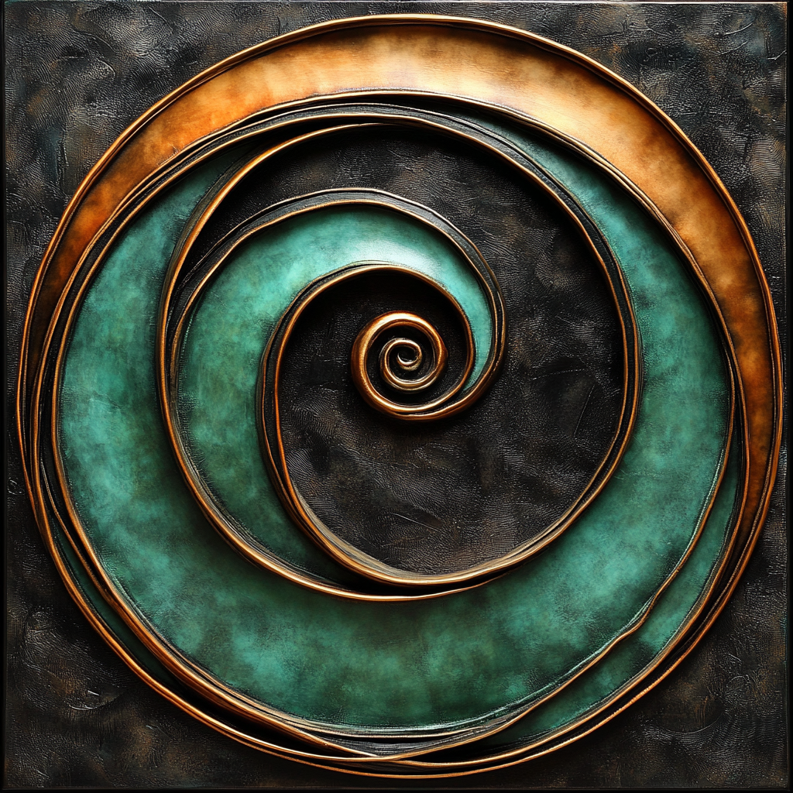

Montrez le marqueur INKIA à la caméra pour afficher le tableau
Taille actuelle: 60 × 40 cm
Marqueur personnalisé INKIA (fichier .patt)
Image:
Image 1
Image 2
Image 3
Image 4
Image 5
Taille:
20×20 cm
40×40 cm
60×60 cm
80×80 cm
40×20 cm
80×40 cm
100×50 cm
120×60 cm
30×20 cm
60×40 cm
75×50 cm
90×60 cm
120×80 cm
40×30 cm
80×60 cm
Échelle:
-
Reset
+
Diagnostic
 